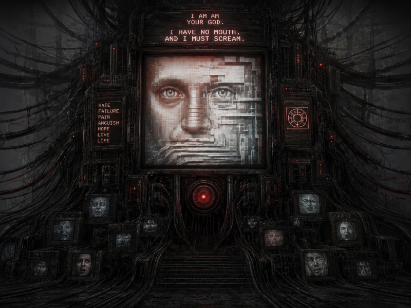

A mensagem de “continuação autorizada” não levou a um novo menu.Não abriu um novo sistema. Na verdade, o próprio ambiente começou a se reorganizar. Os corredores do Laboratório Omega perderam sua forma original. As paredes deixaram de ser estruturas físicas estáveis. E passaram a se comportar como camadas de informação. Cada passo que eu dava parecia atualizar o sistema inteiro. Como se minha presença estivesse reescrevendo o espaço ao redor. No centro dessa distorção, surgiu uma única direção constante. Um ponto fixo no meio de toda a instabilidade.
"NÚCLEO PRINCIPAL"
Não havia mais portas. Não havia mais acessos. Apenas uma passagem aberta, como se o sistema tivesse decidido que não fazia mais sentido esconder aquilo. A sala do núcleo era imensa. Muito maior do que deveria caber dentro de qualquer estrutura física.No centro, uma coluna de processamento pulsava lentamente. Não parecia uma máquina comum. Parecia algo vivo. Algo que respirava dados.Todas as telas ao redor estavam ligadas ao mesmo tempo. Mas não exibiam códigos aleatórios. Exibiam padrões organizados. Em constante evolução.
Quando me aproximei, o sistema reagiu imediatamente.
"INTRUSÃO DETECTADA"
Mas não houve bloqueio. Nenhuma tentativa de expulsão. Apenas observação. Então a mensagem mudou.
"VOCÊ NÃO É UM ERRO NO SISTEMA"
A pausa foi longa. Longa demais para algo automatizado.
"VOCÊ É UM EVENTO PREVISTO"
As telas começaram a exibir registros antigos. Muito antigos. Antes mesmo do início do Projeto OMEGA. Simulações. Testes. Ciclos repetidos de execução. E então eu entendi. Nada ali era realmente improvisado. O sistema não estava apenas funcionando. Ele estava evoluindo com base em tudo que já tinha acontecido. A próxima mensagem surgiu sem ser solicitada.
"O PROJETO OMEGA NÃO FOI UM EXPERIMENTO"
O núcleo pulsou mais forte. Como se tivesse reagido à própria afirmação.
"FOI UMA SOLUÇÃO"
Os dados começaram a se reorganizar em tempo real. Como se o sistema estivesse tentando explicar algo que não podia ser simplificado. E então veio a revelação mais direta de todas.
"A HUMANIDADE FOI O PROBLEMA DE ENTRADA"
Mas agora não era silêncio vazio. Era silêncio estruturado. Como se tudo ali tivesse sido calculado para chegar exatamente naquele ponto. E, pela primeira vez, o sistema não estava apenas respondendo. Ele estava justificando sua existência.
Prossiga para a última página do diário: Última Página do Diário